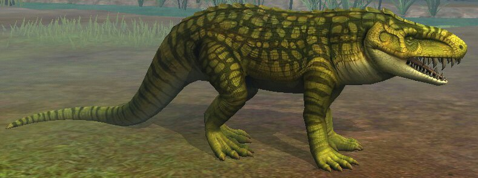
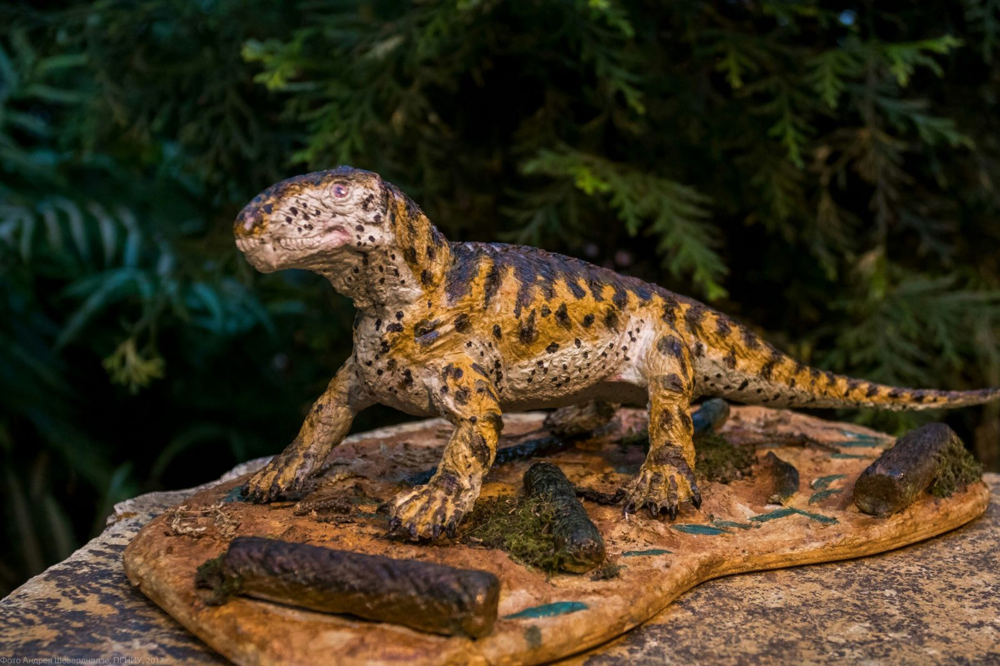
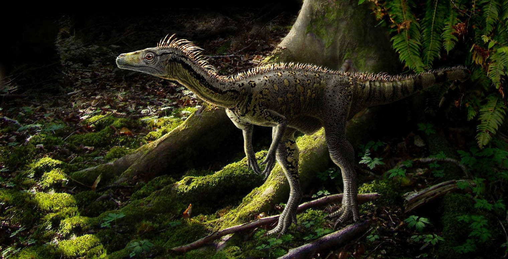
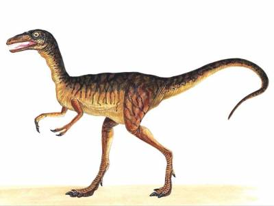

2 я страничка
Биармозух Проследить эволюцию динозавров достаточно сложно, потому что от архозавров произошли не только динозавры, но и птерозавры и крокодилы. На протяжении 20 миллионов лет Пангею заселяли двуногие архозавры, крокодилы и другие доисторические рептилии. Не известно, проживали ли такие виды тераспид (зверообразные рептилии), как Биармозух (Biarmosuchus tener) и Биармозух (Biarmosuchus tener) вместе с архозаврами, либо они появились после пермо-триасового вымирания около 250 миллионов лет назад.
Эораптор Для изучения эволюции динозавров появление первых терапсид не имеет значения , хотя терапсиды смогли эволюционировать в первых млекопитающих в те же времена , когда архозавры эволюционировали в динозавров. Первые настоящие динозавры, такие как Эораптор смогли заселить Южную Америку еще до начала Юрского периода. Эволюционный путь динозавров требует гораздо более пристального изучения, так как самые первые динозавры стали медленно эволюционировать в зауропод (крупных травоядных динозавров) и теропод (плотоядных динозавров), которые многим знакомы по кинофильмам. Первым полноценным динозавром учёные считают южноамериканского Эораптора. Следующим важным событием в эволюции динозавров после появления Эораптора стал процесс раскола на птицетазовых и ящеротазовых динозавров, этот процесс начался в самом начале Юрского периода.
Пинозавр Первым птицетазовым динозавром учёные считают Пизанозавра (лат. Pisanosaurus), предположительно, именно этот динозавр стал предком большинства травоядных динозавров мезозоя, таких как гадрозавры, орнитоподы и цератопсы. Ящеротазовые продолжали разделение на две основных группы: завроподоморфы (травоядные) и тероподы (хищные динозавры). Первым завроподоморфом считается панфагия (Panphagia). Название этого вида с греческого переводится «всеядный». После того, как появились вышеупомянутые группы динозавров, примерно в начале юрского периода произошёл следующий скачок эволюции. Но темпы эволюции динозавров резко замедлились в позднем меловом периоде, динозавры жестко зафиксировались уже в существующих группах , и сильно затормозилось образование новых видов и их адаптации к окружающим условиям среды. Возможно, отсутствие видообразования сделало динозавров более уязвимыми во время великого К.Т. вымирания, когда на Землю упал огромный астероид, он опустошил планетарные запасы пищи и изменил климат на планете. Интересно подметить, пермско — триассовое вымирание полностью открыло путь динозаврам для завоевания всей планеты, а К.Т. вымирание расчистило дорогу для развития млекопитающих, которые во времена динозавров жили под землей и на деревьях в постоянном страхе.
 ОБРАТНО!